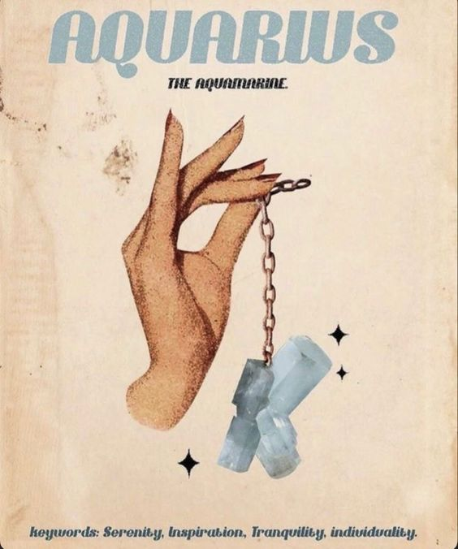

Personality Traits:
Aquarius, represented by the Water Bearer, is known for its originality, independence, and humanitarian spirit. Ruled by Uranus and Saturn, Aquarians are progressive thinkers who value innovation and forward-looking ideas. They are often ahead of their time, embracing unconventional thoughts and approaches. Aquarians are driven by a strong sense of justice and a desire to contribute to the betterment of society.
Aquarians are highly independent and cherish their freedom. They are open-minded, embracing diversity and valuing the uniqueness of individuals. Their intellectual curiosity drives them to seek knowledge and explore new ideas. While they may appear detached at times, Aquarians are deeply compassionate and committed to making the world a better place for all.
Personality Traits:
- Original and Independent: Aquarians embrace their uniqueness and value independence, often charting their own path.
- Progressive and Innovative: They are forward-thinking individuals, often at the forefront of embracing new ideas and technologies.
- Humanitarian and Compassionate: Aquarians are driven by a strong sense of justice and a desire to contribute to the well-being of humanity.
- Open-Minded and Intellectual: Their open-mindedness and intellectual curiosity lead them to explore diverse perspectives and seek knowledge.
Likes:
Aquarians enjoy activities that allow them to express their creativity and contribute to positive change. They value intellectual conversations and engage in activities that challenge their minds. Aquarians appreciate friendships that are built on shared values and a common vision for a better future. They are drawn to causes that promote equality, social justice, and humanitarian efforts.
Career and Ambitions:
Aquarians excel in careers that allow them to express their innovative ideas and contribute to social progress. Fields such as technology, science, social activism, and humanitarian work align well with their values. Aquarians are natural visionaries and may find success in roles that involve research, invention, or leading initiatives for positive change. Their ambition is often directed towards making a meaningful impact on society and creating a more inclusive and enlightened world.
I Recommend watching this!
Get to know your fellow Aquarius friends more!